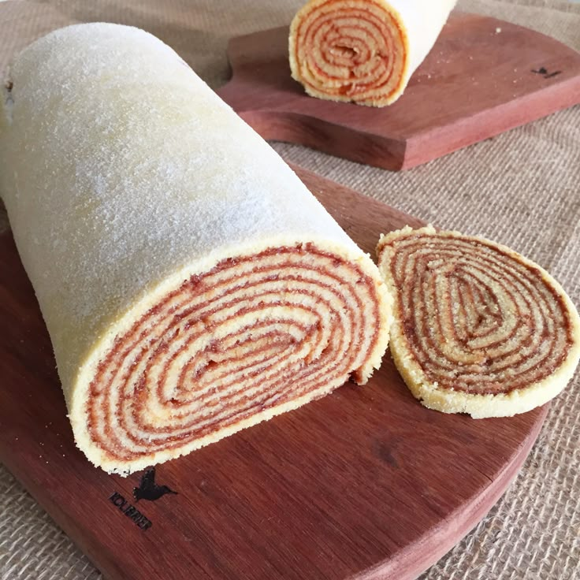

Bolo de Rolo
Um bolo típico nordestino, finamente enrolado com goiabada, perfeito para um café da tarde especial.

Ingredientes
Rende 12 fatias
- 6 ovos
- 200g de açúcar
- 200g de manteiga em temperatura ambiente
- 200g de farinha de trigo
- 300g de goiabada derretida
- Manteiga para untar a forma
Modo de Preparo
Tempo estimado: 60 minutos
- Preaqueça o forno a 180 °C e unte uma assadeira retangular com manteiga.
- Bata a manteiga com o açúcar até formar um creme leve.
- Acrescente os ovos, um a um, batendo bem a cada adição.
- Peneire a farinha e incorpore delicadamente à mistura.
- Despeje uma camada fina da massa na assadeira e leve ao forno por 5 a 7 minutos, ou até firmar levemente.
- Espalhe uma camada de goiabada sobre a massa assada e enrole cuidadosamente, formando o primeiro rolo.
- Repita o processo com o restante da massa e goiabada, formando várias camadas até terminar.
- Deixe esfriar antes de fatiar e servir.
Dica do Chef: Para facilitar o enrolar, use um pano de prato limpo polvilhado com açúcar cristal e enrole a massa ainda morna.